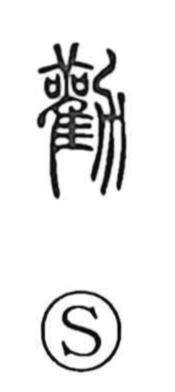

勧

Uncategorized
Kun: susumeru | On: kan
to recommend ・ to encourage ・ to urge ・ to exhort
Explanation
In its older form 勸, this is a picto-phonetic character built on 雚, read kan and depicting the sacred stork, a bird consulted in divination, paired with 力, here understood as the form of the plow 耒. The graph evokes seeking the gods’ will through bird augury to learn the prospects of the harvest, then setting oneself to the work of cultivation in response. From this, the character came to express urging and encouraging others, as well as exertion and diligent effort. Over time its sense broadened to general “encouraging” or “recommending.” The same stork element appears in 観(觀), which points to observing the divine will through augury, and in 歓(歡), which celebrates the joy of receiving a favorable answer to prayer.